IP vs MAC
- IP地址
逻辑地址
用于网络层及上层
IP地址存放在IP数据报的首部；包括源地址和目的地址
- MAC地址
物理地址
用于数据链路层
MAC地址存放在MAC帧的首部；包括源地址和目的地址
- 地址的变化
- 主机H1和主机H2经过两级路由器R1、R2通信
- 网络层，IP数据报的源地址和目标地址始终是IP1、IP2
- 数据链路层，MAC帧的源地址和目标地址相应的发生变化
- 基本拓扑和配置
- PC0发报
- Switch0收报并转发
- R1收报并转发
- R0收报并转发
- R2收报并转发
- Switch1收报并转发
- PC1收报并转发
- 回复 - 略
- 交换机MAC地址为什么没有出现在报文中？
- 首次测试通信为什么会失败3次？
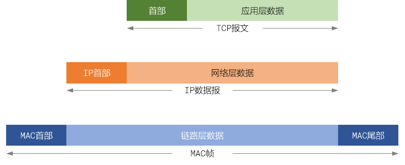

[] PC0 → PC1通信时，MAC 和 IP的变化；点击下载PT文件
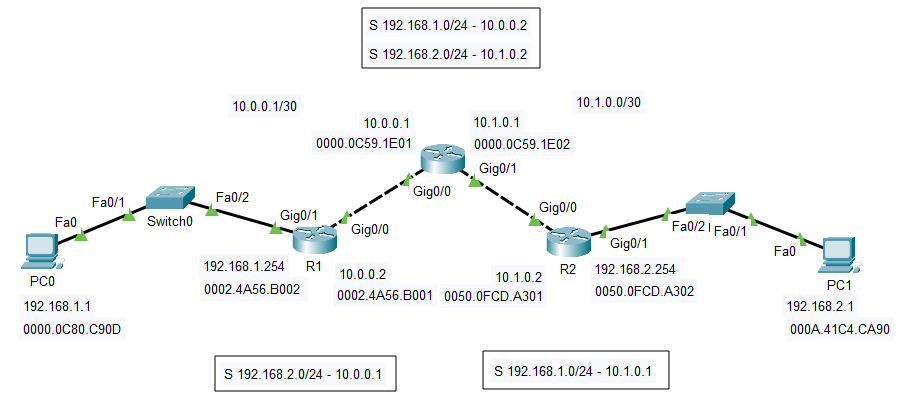
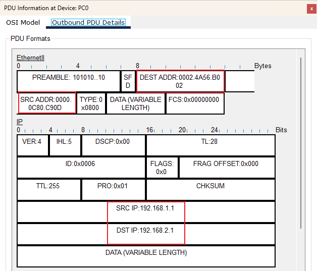
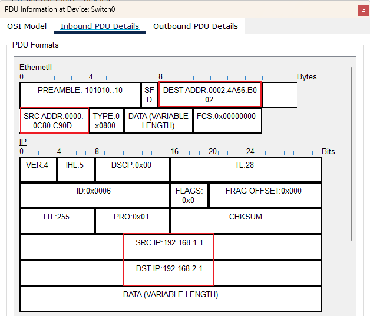
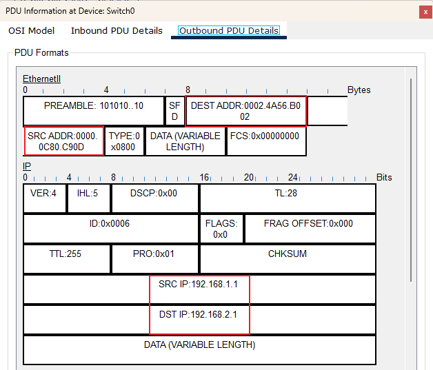
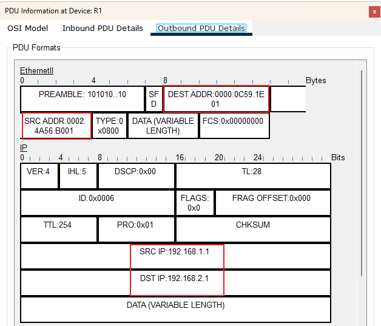
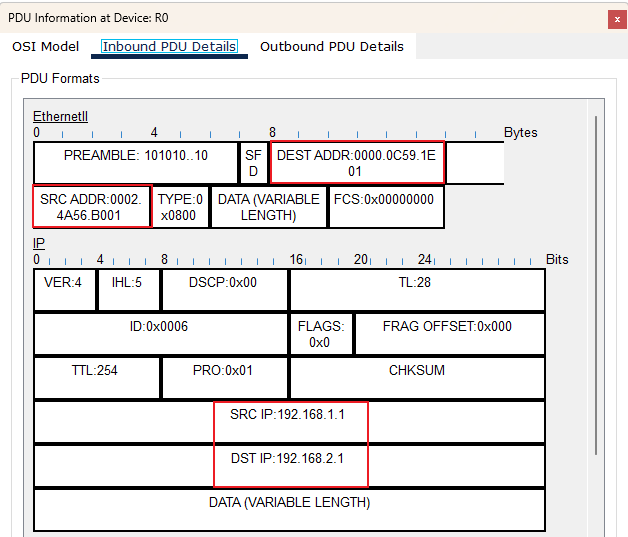
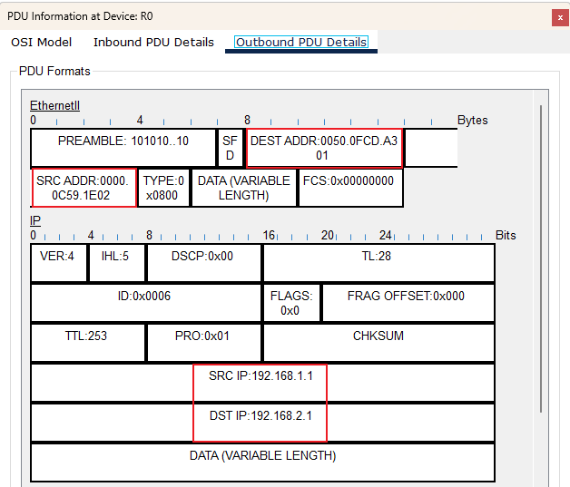
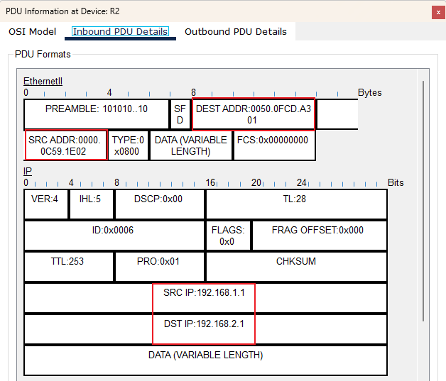
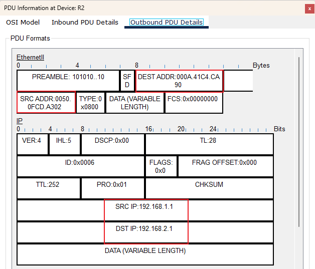
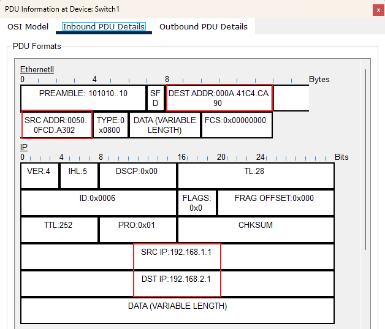
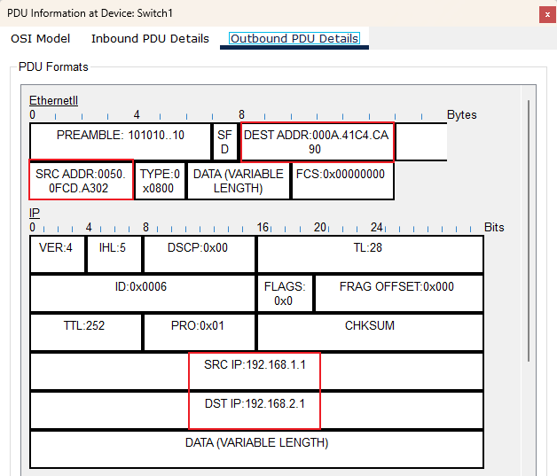
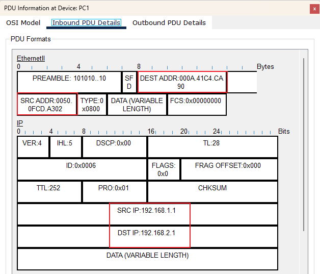
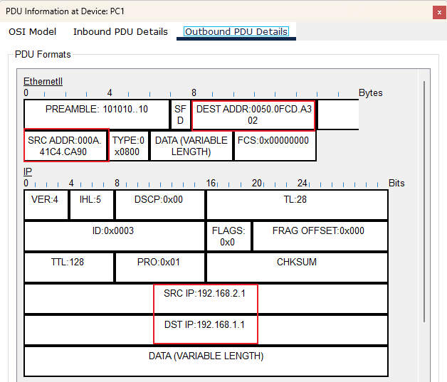
实操 Drill
- 目的
- 分析数据报的转发过程
- 理解IP地址和MAC地址的作用
- 初步理解路由表的作用
- 过程
- 搭建拓扑
- 按照分配IP地址配置PC
- 分别使用CLI和GUI配置路由器端口
- 第一次发简单数据报检查两侧通信情况
- 第二次发简单数据报检查两侧通信情况
- PC0
- 目的IP地址不在当前子网内，也不是广播地址，但设置了网关 → 发给网关
- 根据ARP协议，找出网关IP地址对应的MAC地址和端口，封帧发送
- Switch0
- 登记：进入的帧是否已登记
- 查找：自己的MAC地址和帧的目标MAC地址不匹配 → 不是给自己的 → 检查MAC地址表来确定转发
- 转发：如果有，根据目标MAC地址对应的记录，从指定端口转发；如果没有，则广播
- Router1
- 自己的MAC和接收帧的MAC地址匹配 → 是发给自己的 → 拆帧，发给上层/网络层
- 在自己的CEF（路由表）找目的IP对应的记录；发现有，且下一跳是邻接网（直连）→ 封帧后转发
- Switch1
- 登记：
- 查找：自己的MAC地址和帧的目标MAC地址不匹配 → 不是给自己的 → 检查MAC地址表来确定转发
- 转发：找出目标MAC地址对应的记录，根据端口转发
- PC3
- 略
- 思考
- IP地址为什么不能随便指定？
- 如何判断对方的IP和自己的IP是否在一个子网呢？
- 如何根据IP地址获取对应的MAC地址？
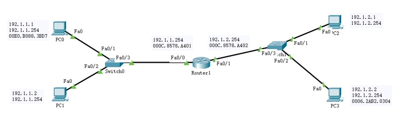
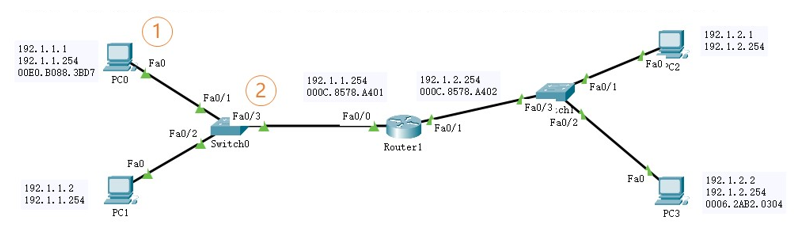
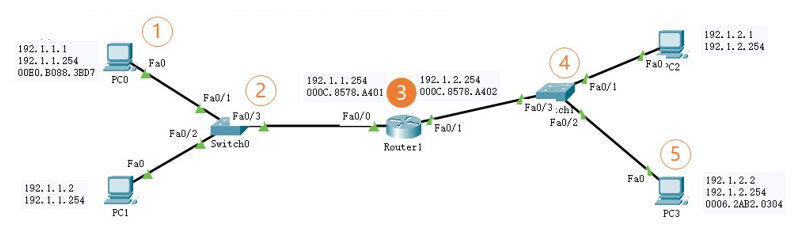
Homework
- Homework
- 独立完成网络拓扑的搭建和配置，认真分析每一个阶段的PDU内容
- 在交换机命令的基础上，归纳路由器的常用命令
- 预习ARP地址解析协议